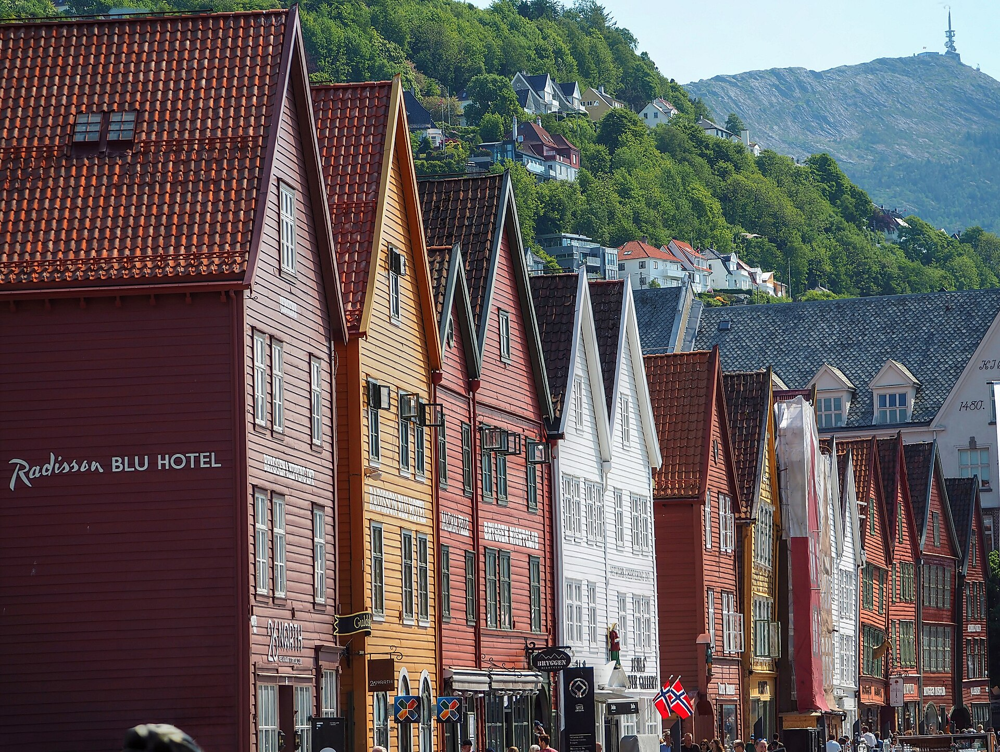
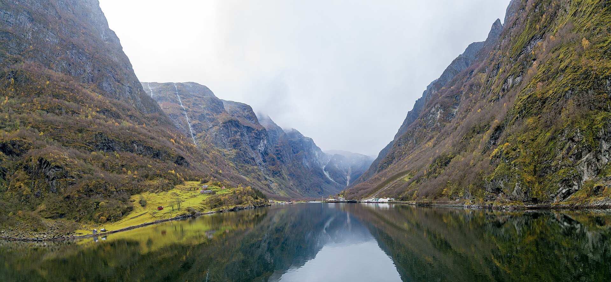
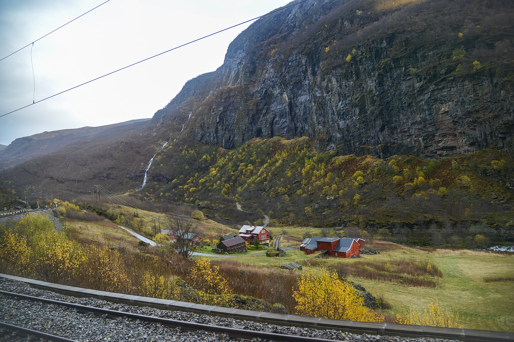
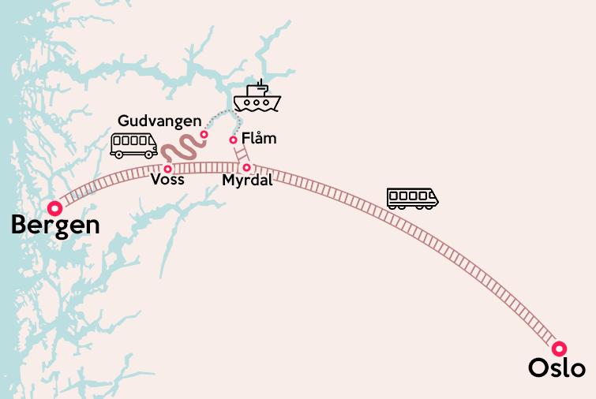
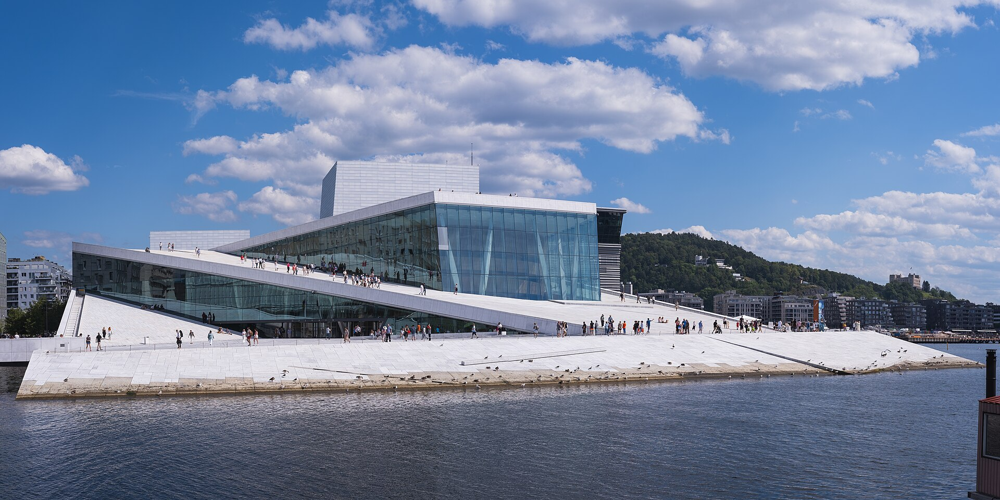

🗺️ 旅の地図
🗺️ Google マップで旅の地図を開く ↗ 全行程・ナットシェル詳細ルート・ホテル・空港バス入り（Google マップアプリでそのまま使えます）
陸路（鉄道・バス・クルーズ）
空港アクセス（バス・特急）
✈️ フライトは点線 🏨 ホテル 🚉 駅・バス停
🗓️ 旅程
| 日付 | 主な行程 | 宿泊 |
|---|---|---|
| 9/16（水） | ✈️ 22:50 中部（Nagoya）発（AY080） | 機中泊 |
| 9/17（木） | ✈️ ヘルシンキ（Helsinki）乗継 → 10:05 ベルゲン（Bergen）着・市内観光 | ベルゲン（Bergen） |
| 9/18（金） | 🚂⛴️ ナットシェル®（Nutshell®・フィヨルド縦断）→ 22:27 オスロ（Oslo）着 | オスロ（Oslo） |
| 9/19（土） | ✈️ 09:10 オスロ（Oslo）発 → トロムソ（Tromsø） 🌌 オーロラ① | トロムソ（Tromsø） |
| 9/20（日） | 🚶 トロムソ（Tromsø）観光 🌌 オーロラ② | トロムソ（Tromsø） |
| 9/21（月） | ✈️ 10:50 トロムソ（Tromsø）発 → オスロ（Oslo）・市内観光 | オスロ（Oslo） |
| 9/22（火） | ✈️ 17:20 オスロ（Oslo）発 → ヘルシンキ（Helsinki）乗継 | 機中泊 |
| 9/23（水） | ✈️ 00:45 ヘルシンキ（Helsinki）発 → 19:35 中部（Nagoya）着 | — |
9/16（水）
日本出発
泊：機内
✈️ 22:50 → 翌05:55 AY080 中部（Nagoya）→ ヘルシンキ（Helsinki） Finnair・13時間05分
22:50
NGO
中部国際空港
（ターミナル1）
Chubu Centrair
（ターミナル1）
Chubu Centrair
所要時間 13時間05分
AY080
05:55+1
HEL
ヘルシンキ・
ヴァンター
Helsinki-Vantaa
ヴァンター
Helsinki-Vantaa
9/17（木）
ベルゲン（Bergen）到着
泊：ベルゲン（Bergen）

Bryggen — Photo: joiseyshowaa / CC BY-SA 2.0（Wikimedia Commons）
🔄 05:55 ヘルシンキ（Helsinki）着 — 乗り継ぎ時間 2時間15分
✈️ 08:10 → 10:05 AY805 ヘルシンキ（Helsinki）→ ベルゲン（Bergen） Finnair・2時間55分
08:10
HEL
ヘルシンキ・ヴァンター
（ターミナル2）
Helsinki-Vantaa
（ターミナル2）
Helsinki-Vantaa
所要時間 2時間55分
AY805
10:05
BGO
ベルゲン空港
（フレスラン）
Bergen Flesland
（フレスラン）
Bergen Flesland
総移動時間
約18時間15分
時差（日本→ノルウェー）
−7時間（夏時間）
10:40頃
🚌 エアポートバス FB50／FB51「Sentrum」行き（Flybussen）で市内へ — 約20〜25分・約10分間隔
停車は4か所のみ：空港（A3のりば）→ オアシェン（Oasen）→ バスターミナル → フェストプラッセン（Festplassen）。終点フェストプラッセンで下車、スカンディック バイパルケンは徒歩1〜2分。チケットは乗車時にカード払い可
午後
🚶 ベルゲン（Bergen）観光（ブリッゲン地区 Bryggen、魚市場 Fisketorget、フロイエン山 Fløyen など）
🏨 IN 16:00 スカンディック バイパルケン（Scandic Byparken） ベルゲン（Bergen）・1泊・宿泊のみ
📍 Christiesgate 5-7, Bergen, Norway ☎ +47 55 54 56 00
| チェックイン | 2026年9月17日（木）16:00 |
|---|---|
| チェックアウト | 2026年9月18日（金）12:00 |
| 宿泊 | 1泊 1部屋 |
| 宿泊者数 | 大人4名 |
| 客室タイプ | ファミリー・ダブルルーム（キング1台、シングル3台、ソファベッド1台） |
| 食事 | 宿泊のみ |
9/18（金）
ノルウェー・イン・ア・ナットシェル®でオスロ（Oslo）へ
泊：オスロ（Oslo）


Nærøyfjord / Flåmsbana — Photo: Jorge Láscar / CC BY 2.0（Wikimedia Commons）🚂 08:29 → 22:27 ノルウェー・イン・ア・ナットシェル®（Norway in a Nutshell®） 全5区間確定・支払い済み
🚂⛴️ ノルウェーの定番セルフガイドツアー。鉄道・バス・フィヨルドクルーズを乗り継ぎ、UNESCO世界遺産のネーロイフィヨルド（Nærøyfjord）と世界的名列車2路線を1日で巡りながらベルゲン（Bergen）からオスロ（Oslo）へ移動します（約14時間）。

-
① ヴォス鉄道（The Voss Railway） ベルゲン（Bergen）08:29 → ヴォス（Voss）09:41✅ 確定・便コード 1848オスロ〜ベルゲンを結ぶベルゲン線の区間乗車。湖と山々を眺めながらヴォスへ。
💺 指定席：10号車 230・231・234・235（Standard）
🚉 途中駅：アルナ（Arna）→ トレンゲレイド（Trengereid）→ ヴァクスダール（Vaksdal）→ スタンゲッレ（Stanghelle）→ ダーレ（Dale）→ ボルスタドイリ（Bolstadøyri）→ エヴァンゲル（Evanger）→ ブルケン（Bulken）
※Bane NOR「Bergen–Voss–Myrdal（R40）」系統の停車駅。当日のダイヤはVy公式で確認できます -
② ネーロイダーレン渓谷バス（Nærøydalen） ヴォス（Voss）10:10 → グドヴァンゲン（Gudvangen）11:10✅ 確定・便コード VG-1010・自由席ネーロイダーレン渓谷を下る絶景ルート。最大1,800mの断崖とスタルハイム（Stalheim）周辺のつづら折りの景観が見どころ。
-
③ UNESCOネーロイフィヨルド・クルーズ（Nærøyfjord Cruise） グドヴァンゲン（Gudvangen）12:10 → フロム（Flåm）14:10✅ 確定・便コード NG-1210・自由席ツアー最大のハイライト。UNESCO世界遺産ネーロイフィヨルド（Nærøyfjord・ヨーロッパで最も狭いフィヨルド・最狭部約250m）からアウルランフィヨルド（Aurlandsfjord）へ。両岸に1,700m級の山々と滝、電動クルーズ船で静かに進みます。デッキは冷えるので防寒着を。
⏱️ グドヴァンゲンで約1時間の待ち時間（11:10着 → 12:10発）。 -
④ フロム鉄道（Flåmsbana） フロム（Flåm）16:00 → ミュルダール（Myrdal）16:57✅ 確定・便コード 1864・自由席世界で最も急勾配の普通鉄道のひとつ（20kmで標高差約866m）。フィヨルド、渓谷、滝、山岳農場を縫って登ります。途中ショースフォッセン（Kjosfossen）の滝で数分間の写真停車あり。
⏱️ フロムで約1時間50分の自由時間（14:10着 → 16:00発）— 昼食・村の散策・お土産のチャンス！ -
⑤ ベルゲン鉄道（The Bergen Railway） ミュルダール（Myrdal）17:40 → オスロ（Oslo）22:27✅ 確定・列車番号 64ヨーロッパ屈指の景勝路線。標高1,222mのフィンセ（Finse）駅（路線最高地点）を越え、ハルダンゲルヴィッダ（Hardangervidda）高原の荒涼とした風景から夜のオスロへ。車内にカフェワゴンあり。
💺 指定席：7号車 5・6・9・10（Standard）
⏱️ ミュルダールで約43分の待ち時間（16:57着 → 17:40発）。
| 日付 | 2026年9月18日（金） |
|---|---|
| 参加者 | 大人4名 |
| 支払い | ✅ 支払い済み（2026年3月22日・Netaxept決済）— 現地払いなし |
| 食事 | ツアーに食事は含まれません。ヴォス（Voss）駅・クルーズ船内・フロム（Flåm）村・オスロ行き車内のカフェで購入可。フロムでの待ち時間が昼食〜おやつのチャンスです |
| メモ | ・全区間予約確定済み（①〜⑤すべて確定時刻を記載） ・スーツケースは各自持ち運び（乗り換え4回）。身軽な服装がおすすめ ・9月中旬の山岳部・フィヨルドは冷えます。重ね着＋防風ジャケットを ・チケットはスマホ提示でOK（紙のチケットへの交換は不要） ・ヴォス（Voss）駅のバス乗り場はホーム直結。ナットシェル用バスが複数並ぶことがあるので「Gudvangen行きか」を運転手に確認 ・フロム鉄道は自由席。ショースフォッセン（Kjosfossen）の滝が見える側の席が人気なので早めに並ぶのがおすすめ ・万一の列車トラブル時は「ベルゲン（Bergen）→フロム（Flåm）の高速船」という代替ルートあり（体験談より） |
📖 参考リンク集（体験談・公式サイト）
- ▼ ベルゲン → オスロ方向（今回と同じ向き）
-
【北欧周遊1人旅9】ナットシェル・ソグネフィヨルドツアー前編：ベルゲン〜フロム（yunyunさん）
2023年5月。チケットPDFのオフライン保存が役立ったなど実用的
-
【北欧周遊1人旅10】ソグネフィヨルドツアー後編：フロム鉄道でフロム〜オスロ（yunyunさん）
「世界一美しい車窓」フロム鉄道とオスロまでのベルゲン鉄道
-
ノルウェー女子ひとり旅【フィヨルドへ】念願の鉄道、フィヨルドツアー編②（koko sanさん）
7月・ベルゲン発→オスロ着。グドヴァンゲンの待ち時間、スタルハイム休憩などの記録
-
ベルゲンからオスロへ：列車トラブルでフロムまで高速船に（Takashiさん）
列車不通時に高速船で迂回した貴重な記録。フロム鉄道の座席の向きのヒントも
- ▼ オスロ → ベルゲン方向（行程の参考に）
-
2025初夏の北欧(2) オスロからソグネフィヨルド経由ベルゲン（菊花さん）
2025年の新しい旅行記
-
ノルウェー4日目：オスロ→ベルゲン ナットシェル（Lazy Butlerさん）
各乗り換えの様子が詳しい定番記事
- ベルゲン急行とフロム鉄道で、オスロからフロム・ベルゲンへ（ムーミン３さん）
- ▼ 在住者ガイド・レビュー
-
ナットシェル夏のソグネフィヨルドツアー体験記・前編（もかのノルウェー生活ブログ）
在住者による実用ガイド。Eチケットのスマホ提示、ヴォスのバス乗り場の注意点など
-
ナットシェル夏のソグネフィヨルドツアー体験記・後編（もかのノルウェー生活ブログ）
クルーズ〜フロム〜フロム鉄道区間の続編
-
VELTRA ナットシェル周遊チケット 参加者の体験談・口コミ集
多数の日本人参加者のレビュー
- ▼ 公式サイト
-
Norway in a Nutshell®（Fjord Tours 公式）
ツアー公式ページ（英語）
🏨 IN 15:00 コンフォートホテル・ボースパーケン（Comfort Hotel Børsparken） オスロ（Oslo）・1泊・朝食付き（到着は23時頃）
📍 Tollbugata 4, Oslo, Norway ☎ +47 22 47 17 17 🚉 オスロ中央駅から徒歩約5分
| チェックイン | 2026年9月18日（金）15:00〜（オスロ着22:27のため到着は23時頃） |
|---|---|
| チェックアウト | 2026年9月19日（土）11:00 |
| 宿泊 | 1泊 1部屋 |
| 宿泊者数 | 大人4名 |
| 客室タイプ | ファミリー4人部屋（クイーン1台、ソファベッド） |
| 食事 | 朝食付き |
9/19（土）
トロムソ（Tromsø）へ・オーロラ観測1夜目
泊：トロムソ（Tromsø）
Aurora Borealis, Tromsø — Photo: Andi Gentsch / CC BY-SA 2.0（Wikimedia Commons）
〜07:30
🏨 チェックアウト（ボースパーケン / Børsparken）→ オスロ中央駅（Oslo S）へ徒歩約5分
07:40頃
🚄 空港特急フリートグ（Flytoget）または Vy 普通列車で空港へ — 約20〜25分
オスロ中央駅 → ガーデモエン空港（駅はターミナル直結）。搭乗手続き08:30まで・SK 4412は09:10発
✈️ 09:10 → 11:00 SK 4412 オスロ（Oslo）→ トロムソ（Tromsø） SAS・1時間50分
09:10
OSL
オスロ空港
（ガーデモエン）
Oslo Gardermoen
（ガーデモエン）
Oslo Gardermoen
所要時間 1時間50分
SK 4412
11:00
TOS
トロムソ空港
Tromsø Langnes
Tromsø Langnes
11:00頃
🚌 空港エクスプレスバス（Flybussen）でホテルへ — 約15〜20分
クオリティ ホテル サガはバス停が目の前（Richard Withs plass）。チケットは乗車時にカード払い可
🏨 IN 15:00 クオリティ ホテル サガ（Quality Hotel Saga） トロムソ（Tromsø）・2泊・宿泊のみ
📍 Rich Withs Pl. 2, Tromsø, Norway ☎ +47 77 60 70 00
| チェックイン | 2026年9月19日（土）15:00 |
|---|---|
| チェックアウト | 2026年9月21日（月）12:00 |
| 宿泊 | 2泊 1部屋 |
| 宿泊者数 | 大人4名 |
| 客室タイプ | ファミリールーム・禁煙（シングルまたはセミダブル2台、二段ベッド1台） |
| 食事 | 宿泊のみ |
🌌 夜 オーロラ・ミニバスチェイス（1回目） Northern Lights Minibus Chase
🌌 ミニバスでオーロラを追いかける夜のツアー（9/19・9/20の2回参加）
| 日付 | 2026年9月19日（土）・9月20日（日）の2夜 |
|---|---|
| 参加者 | 大人4名 |
9/20（日）
トロムソ（Tromsø）観光・オーロラ観測2夜目
泊：トロムソ（Tromsø）
日中
🚶 トロムソ（Tromsø）自由行動（北極教会 Ishavskatedralen、ケーブルカー・フィエルハイセン Fjellheisen など）
夜
🌌 オーロラ・ミニバスチェイス（2回目）
Northern Lights Minibus Chase・大人4名
9/21（月）
オスロ（Oslo）へ戻る
泊：オスロ（Oslo）

Oslo Opera House — Photo: Christian David / CC BY-SA 4.0（Wikimedia Commons）
朝
🏨 チェックアウト（クオリティ ホテル サガ / Quality Hotel Saga）
09:30頃
🚌 ホテル前から空港エクスプレスバス（Flybussen）で空港へ — 約15〜20分
バス停はホテル正面（Richard Withs plass）。搭乗手続き10:10まで・SK 4411は10:50発
✈️ 10:50 → 12:45 SK 4411 トロムソ（Tromsø）→ オスロ（Oslo） SAS・1時間55分
10:50
TOS
トロムソ空港
Tromsø Langnes
Tromsø Langnes
所要時間 1時間55分
SK 4411
12:45
OSL
オスロ空港
（ガーデモエン）
Oslo Gardermoen
（ガーデモエン）
Oslo Gardermoen
13:00頃
🚄 空港特急フリートグ（Flytoget）または Vy 普通列車で市内へ — 約20〜25分
ガーデモエン空港 → オスロ中央駅。グランド セントラルは駅舎内なので移動が楽
午後
🚶 オスロ（Oslo）観光（オペラハウス Operahuset、カールヨハン通り Karl Johans gate など）
🏨 IN 15:00 コンフォート ホテル グランド セントラル（Comfort Hotel Grand Central） オスロ中央駅（Oslo S）駅舎内・1泊・朝食付き
📍 Jernbanetorget 1, Østbanehallen, Oslo, Norway（オスロ中央駅舎内） ☎ +47 22 98 28 00
| チェックイン | 2026年9月21日（月）15:00 |
|---|---|
| チェックアウト | 2026年9月22日（火）12:00 |
| 宿泊 | 1泊 1部屋 |
| 宿泊者数 | 大人4名 |
| 客室タイプ | ファミリールーム（ダブル1台、ソファベッド1台） |
| 食事 | 朝食付き |
9/22（火）
帰国の途へ
泊：機内
〜12:00
🏨 チェックアウト（グランド セントラル / Grand Central）— 午前中はオスロ（Oslo）観光可
15:00頃
🚄 オスロ中央駅（Oslo S）から空港特急フリートグ（Flytoget）または Vy 普通列車で空港へ — 約20〜25分
グランド セントラルは駅舎内。搭乗手続きの目安に余裕をもって・AY916は17:20発
✈️ 17:20 → 19:45 AY916 オスロ（Oslo）→ ヘルシンキ（Helsinki） Nordic Reg for Finnair・1時間25分
17:20
OSL
オスロ空港
（ガーデモエン）
Oslo Gardermoen
（ガーデモエン）
Oslo Gardermoen
所要時間 1時間25分
AY916
19:45
HEL
ヘルシンキ・
ヴァンター
Helsinki-Vantaa
ヴァンター
Helsinki-Vantaa
🔄 ヘルシンキ（Helsinki）で乗り換え — 乗り継ぎ時間 5時間0分（日付が変わって9/23発）
9/23（水）
日本帰着
19:35 中部（Nagoya）着
✈️ 00:45 → 19:35 AY079 ヘルシンキ（Helsinki）→ 中部（Nagoya） Finnair・12時間50分
00:45
HEL
ヘルシンキ・ヴァンター
Helsinki-Vantaa
（9/23 深夜発）
Helsinki-Vantaa
（9/23 深夜発）
所要時間 12時間50分
AY079
19:35
NGO
中部国際空港
（ターミナル1）
Chubu Centrair
（ターミナル1）
Chubu Centrair
総移動時間
約19時間15分
中部（Nagoya）到着
9/23（水）19:35
※ 所要時間は現地時刻と時差（日本 UTC+9／フィンランド夏時間 UTC+3／ノルウェー夏時間 UTC+2）から算出。
※ 「+1」は翌日到着を表します。各カードはクリック／タップで詳細が開きます。
ℹ️ 基本情報
通貨・気候・持ち物などの情報は準備中です。